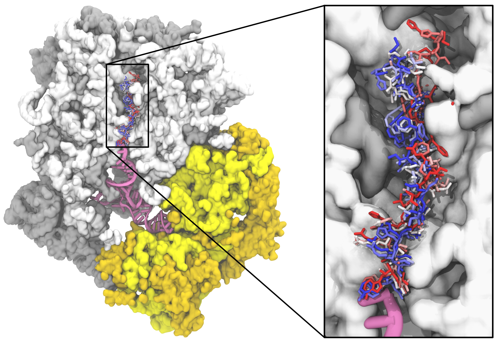
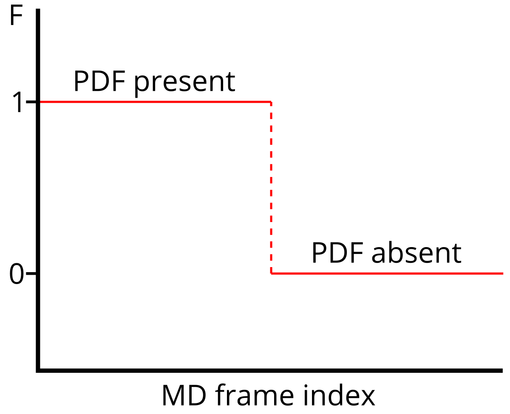
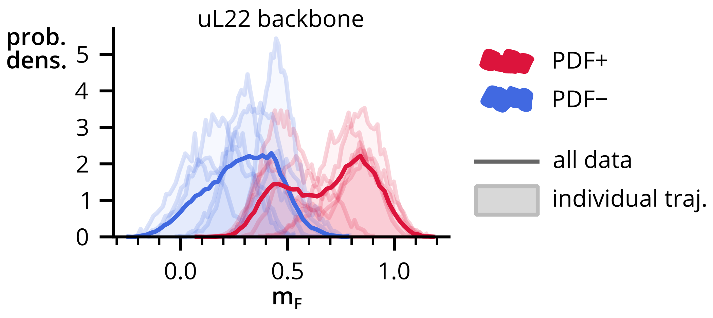
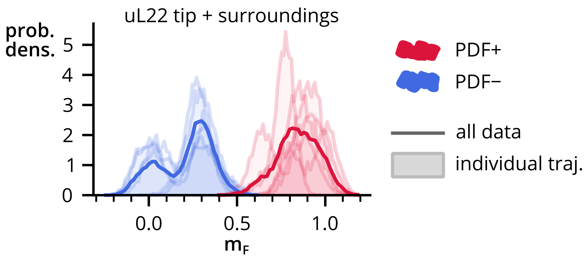

Atomistic computer simulations of the ribosome


Helmut Grubmüller group
Marek Eliáš group
Klára Hlouchová group
1. Ribosome essentials
2. Atomistic simulations
3. Case study: PDF
1. Ribosome essentials
2. Atomistic simulations
3. Case study: PDF


1. Ribosome essentials
2. Atomistic simulations
3. Case study: PDF
Numerical integration of Newton's equations of motion using an empirical all-atom potential.
Three challenges
1. Atomistic simulations
2. Ribosome essentials
3. Case study: PDF
McGrath, Černeková, Kolář: PMID: 36335428


Strategy
- Build systems with and without PDF.
- Using MD simulations generate conformational ensembles.
- Search for differences in ribosome dynamics caused by PDF.
Technical details
- Amber family of force fields
- explicit SPC/E water, 150 mM KCl, 25 mM MgCl2
- 2M particles
- vsites for hydrogens, 4 fs time step
- 1000 ns/traj, 4 independent trajs/system
- Gromacs 2020, CPU-only implementation
- 3.3M corehours
Structural analysis


Allostery via Principal Component Regression
Aim: Get a statistical model to predict F.
- Select atoms to test allostery.
- Cartesian coordinates ⟶ principle components (PCs).
- Dimensionality reduction (~100 PCs).
- Linear combination of selected PCs to correlate with F.
Hub, de Groot (2009):
PMID: 19714202



Prediction accuracy

Further reading
Bock, Gabrielli, Kolář, Grubmüller (2023): PMID: 36719969
Kolář, Nagy, Kunkel, Vaiana, Bock, Grubmüller (2022):
PMID: 35150281
Bock, Kolář, Grubmüller (2018): PMID: 29202442
http://mhko.science/contact
http://mhko.science/jh-inst-2023